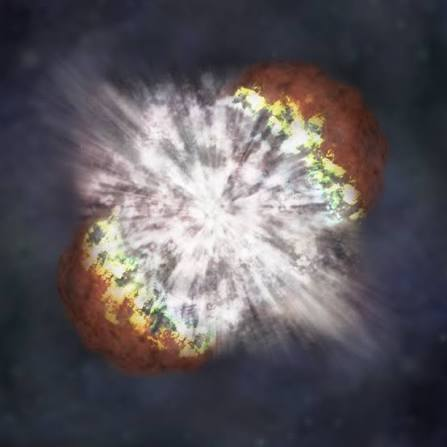
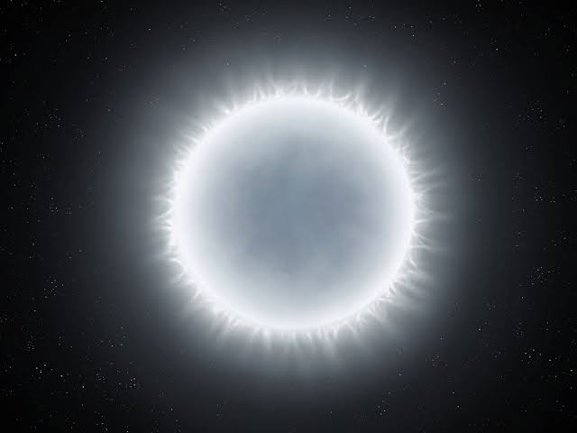
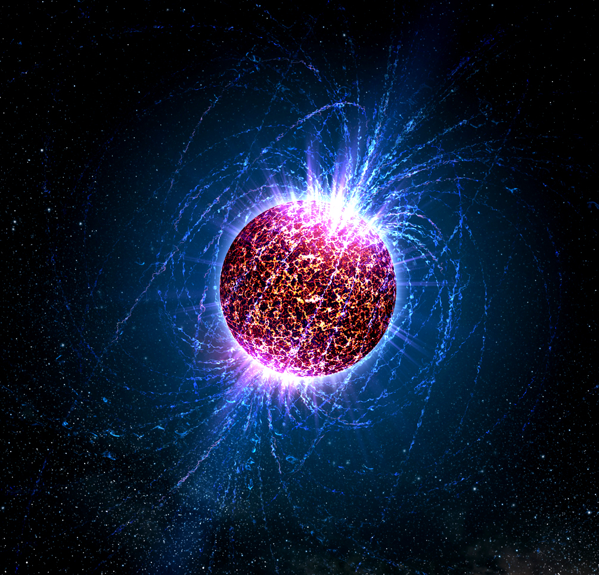
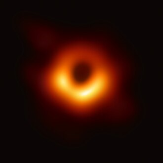

La fusión es un proceso en el cual, como bien indica su nombre, dos núcleos ligeros se unen para dar lugar a un núcleo pesado.Los elementos envueltos en este tipo de reacción pueden ser muchos, aunque los más comunes son el deuterio y el tritio, dos isótopos del hidrógeno, los cuales se unen dando lugar a un núcleo pesado de helio.
Pero, lo verdaderamente interesante de esta reacción es la inmensa cantidad de energía que libera. Y es que, a pesar de dar como resultado un átomo pesado, la masa de este núcleo va a ser menor que la de los núcleos de los átomos originales (los dos hidrógenos, en el caso más común), por lo que la masa que sobra se transformará en energía.
La cadena protón-protón consta de una serie de etapas distintas, cada una marcada por reacciones nucleares específicas. En la primera etapa, dos protones se fusionan para formar un núcleo de deuterio, liberando positrones y neutrinos en el proceso. A medida que avanza la cadena, los núcleos de deuterio se combinan para formar helio-3 y helio-4, liberando más energía en cada paso sucesivo. Estas reacciones son impulsadas por la fuerza nuclear fuerte, que domina a distancias extremadamente cortas dentro del núcleo estelar.
Se conoce como Ciclo Carbono Nitrógeno Oxígeno a una de las dos series de reacciones nucleares que suministran la energía a una estrella de primera magnitud.
El ciclo del carbono comienza y acaba con un núcleo de carbono 12 que actúa como catalizador en la producción de un núcleo de helio a partir de núcleos de hidrógeno. Cuando se agota el hidrógeno, el ciclo termina. El ciclo CNO es dominante en estrellas que son más de 1,3 veces más masivas que el Sol.
A diferencia de la reacción protón-protón, que consume todos sus constituyentes, el ciclo CNO es un ciclo catalítico. En el ciclo CNO, cuatro protones se fusionan utilizando isótopos de carbono, nitrógeno y oxígeno como catalizadores, cada uno de los cuales se consume en un paso del ciclo CNO, pero se regenera en un paso posterior. El producto final es una partícula alfa (un núcleo de helio estable), dos positrones y dos neutrinos electrónicos. Los positrones se aniquilarán con los electrones, liberando energía en forma de rayos gamma. Los neutrinos escapan de la estrella llevándose algo de energía. Un núcleo pasa a convertirse en isótopos de carbono, nitrógeno y oxígeno a través de una serie de transformaciones en un bucle sin fin.
La cadena protón-protón es más prominente en estrellas de la masa del Sol o menos. Esta diferencia se deriva de las diferencias de dependencia de la temperatura entre las dos reacciones; La reacción en cadena proton-proton comienza a temperaturas alrededor de 4 mega kelvin, lo que la convierte en la fuente de energía dominante en las estrellas más pequeñas. Una cadena de CNO auto mantenida comienza aproximadamente en 15 mega kelvin, pero su producción de energía aumenta mucho más rápidamente con el aumento de las temperaturas, por lo que se convierte en la fuente de energía dominante en aproximadamente 17 mega kelvin.
Luz
La luz es una forma de energía radiante que se produce a partir de la emisión de fotones por parte de una fuente luminosa, como el sol o una bombilla. Estos fotones viajan en forma de ondas electromagnéticas y son captados por nuestros ojos, permitiéndonos percibir los colores y las formas de los objetos que nos rodean. Además de ser fundamental para la visión, la luz también tiene otras propiedades, como la reflexión y la refracción, que la hacen indispensable en campos como la fotografía, la óptica y la tecnología de la información. Se produce principalmente por la emisión de energía por parte de fuentes luminosas, como el sol, las lámparas o los dispositivos electrónicos.
Caracteristicas de la luz
Calor
El calor, por su parte, es una forma de energía térmica, no es visible para el ojo humano, se transfiere entre cuerpos o sistemas que se encuentran a diferentes temperaturas. Esta transferencia de energía se produce por la vibración de las partículas que componen la materia y se transmite por conducción, convección o radiación.
Caracteristicas del calor
Radiacion electromagnetica
La radiación electromagnética es una perturbación de un campo eléctrico y un campo magnético que se propaga en el espacio.
La radiación electromagnética puede propagarse en el vacío, como el espacio interplanetario, en medios menos densos, como la atmósfera, o en estructuras de guía, como las guías de ondas.
Caracteristicas de la radiacion electromagnetica
La nucleosíntesis es el proceso de creación de nuevos núcleos atómicos a partir de los nucleones preexistentes (protones y neutrones) para llegar a generar el resto de los elementos de la tabla periódica. Los nucleones primigenios preexistentes se formaron a partir del plasma de quarks-gluones del Big Bang cuando se enfrió por debajo de los diez millones de grados, este proceso se puede llamar nucleogénesis, la generación de nucleones en el Universo. La consecuente nucleosíntesis de los elementos (incluyendo, por ejemplo, todo el carbono y todo el oxígeno) ocurre principalmente en el interior de las estrellas por fusión o fisión nuclear.
Supernovas
Las supernovas son explosiones estelares que pueden liberar una cantidad de energía equivalente a la de toda una galaxia. Una de las causas principales de las supernovas es el colapso gravitacional de una estrella masiva al final de su vida. Estas estrellas, con al menos cinco veces la masa de nuestro Sol, agotan su combustible nuclear a un ritmo acelerado. La fusión nuclear en sus núcleos genera enormes cantidades de energía, contrarrestando la atracción gravitacional que intenta colapsar la estrella.


Enanas blancas
Una enana blanca es un tipo de estrella que ha agotado el combustible nuclear en su núcleo y ha pasado por las etapas previas de evolución estelar. Se forman cuando estrellas con masas similares a la del Sol agotan el hidrógeno en sus núcleos a través de procesos de fusión nuclear. Durante esta fase, la estrella se expande y se convierte en una gigante roja. Después de esta etapa, la estrella expulsa sus capas externas hacia el espacio, formando una nebulosa planetaria, y el núcleo remanente, que es rico en carbono y oxígeno, se contrae y se convierte en una enana blanca.
Estrellas de neutrones
Las estrellas de neutrones se presentan como los últimos suspiros de los astros masivos, que colapsan bajo su propio peso tras una explosión de una supernova. En este violento proceso, la materia estelar se comprime en una esfera increíblemente densa, en la que los electrones y los protones se llegan a fusionar para formar neutrones. Se trata de un colapso tan extremo que da lugar a un objeto de proporciones cósmicas, pero que posee el diámetro típico del tamaño de una ciudad.


Agujeros negros
Los astrónomos y físicos suelen definir a los agujeros negros como espacios de materia extremadamente densa. Objetos cuya masa es tan condensada que distorsionan drásticamente el tejido espaciotiempo. La mayoría de los agujeros negros son formados por restos condensados de una estrella masiva.